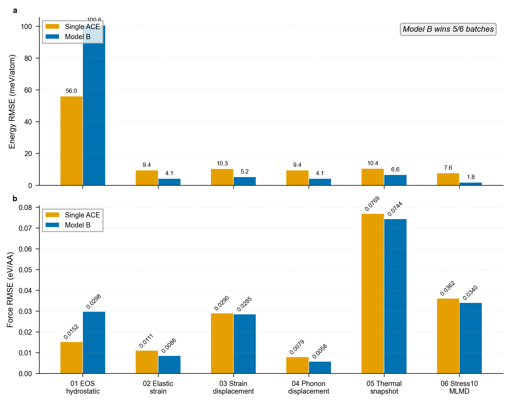
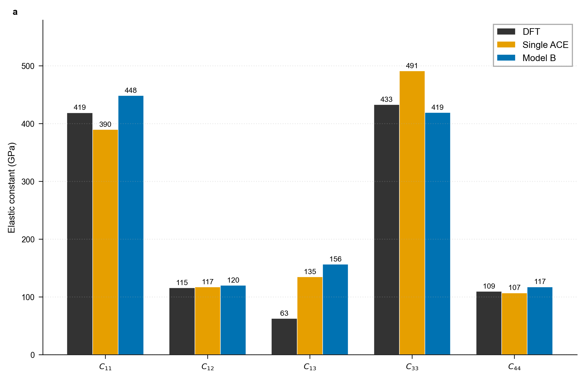
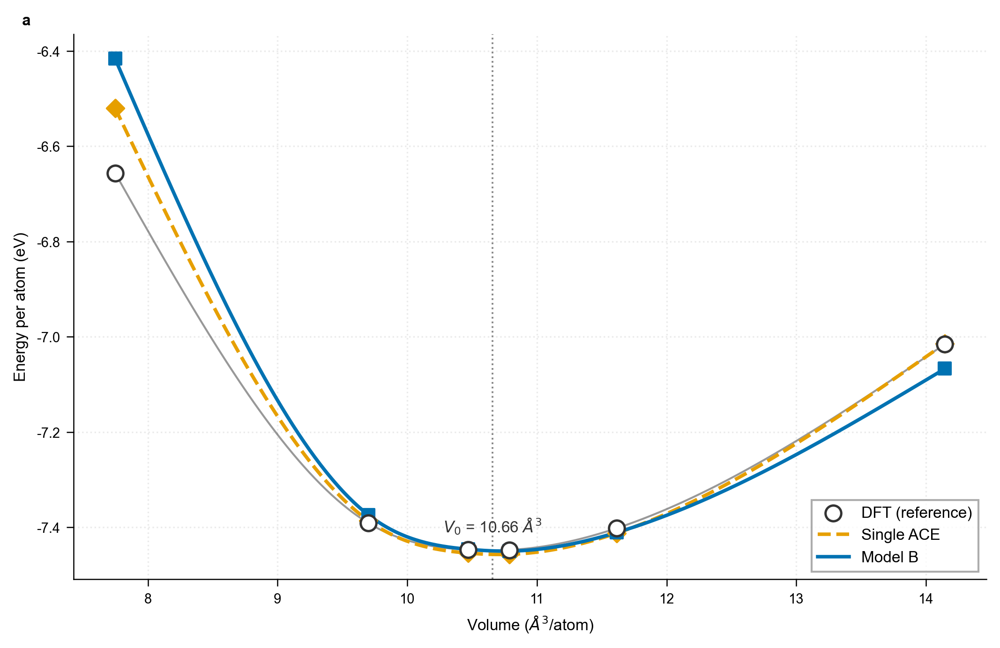
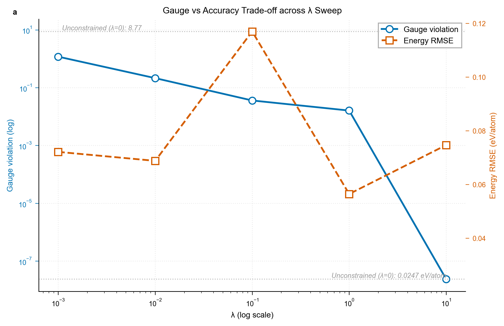

Machine-learned interatomic potentials (MLIPs) have become an indispensable tool for atomistic simulations, bridging the accuracy of density functional theory (DFT) with the computational efficiency required for large-scale molecular dynamics [1, 2, 3]. Among the many MLIP frameworks, the atomic cluster expansion (ACE) [2, 4] has gained prominence for its linear parameterization, rigorous completeness guarantees [5], and efficient implementation in the performant ACE (PACE) format. ACE potentials have been successfully applied to a wide range of materials including aluminum [6], tungsten [7], and compound semiconductors such as AlN [8].
Despite these successes, extending ACE potentials to multi-element compounds introduces fundamental challenges that are not fully addressed by existing approaches. The standard multi-element ACE assigns independent coefficient vectors to each chemical species, \( \mathbf{c}_Z \), but this parameterization does not exploit the shared aspects of bonding physics across elements, nor does it provide a framework for reasoning about element-specific response functions.
Recent work on modular MLIPs has explored various strategies for combining element-specific or environment-specific models. Liu et al. [9] introduced mixture-of-experts (MoE) and mixture-of-linear-experts (MoLE) architectures within the DeepMD-kit framework [14], using element-wise routing to activate different neural network experts depending on the central atom species. Nascimento et al. [10] proposed a spatial partitioning approach that assigns different Allegro [15] models to different spatial regions (e.g., bulk vs. surface), with a co-training agreement loss to reduce interface mismatch. While these works demonstrate the promise of modular MLIPs, they operate on fundamentally different principles: Liu's MoE employs nonlinear neural network experts at runtime, while Nascimento's spatial partitioning addresses spatial—not chemical—inhomogeneity. Neither addresses the coefficient-level identifiability problem that arises when combining element-specific linear modules.
An orthogonal line of research has investigated gauge degrees of freedom in interatomic potentials. Yoo et al. [11] identified the atomic energy gauge in neural network potentials: the total energy from DFT determines only the sum over atoms, leaving the per-atom energy decomposition ambiguous. They proposed fixing this gauge by anchoring the potential to invariant points (e.g., the bulk cohesive energy) where the atomic energy is known by convention. Earlier, Herman [12] identified two gauge degrees of freedom in embedded-atom method (EAM) potentials, arising from the ambiguity between the embedding function and the pair potential. In the ACE literature, Ho et al. [13] identified self-interaction terms that create a form of basis redundancy, which they resolved via a canonical expansion. However, none of these works address the coefficient-level gauge freedom that emerges when a multi-element ACE potential is parameterized with a shared base and element-specific corrections.
In this work, we make the following contributions:
The atomic cluster expansion [2] expresses the total potential energy of an atomic configuration \( \mathbf{R} = \{\mathbf{r}_i\} \) as a sum over atomic contributions:
$$ E(\mathbf{R}) = \sum_{i} \epsilon_{Z_i}(\mathbf{q}_i), \tag{1} $$where \( Z_i \) is the chemical species of atom \( i \), and \( \mathbf{q}_i \) denotes the local atomic environment within a cutoff radius \( r_{\mathrm{cut}} \) around atom \( i \).
For linear ACE, the atomic energy contribution is a linear combination of basis functions:
$$ \epsilon_{Z}(\mathbf{q}_i) = \mathbf{c}_{Z}^T \mathbf{B}(\mathbf{q}_i) + b_{Z}, \tag{2} $$where \( \mathbf{B}(\mathbf{q}_i) \) is the ACE basis vector—a collection of \( A \), \( AA \), and \( AAA \) type invariant polynomials constructed from radial functions and spherical harmonics—and \( b_Z \) is a species-dependent constant energy shift.
Our baseline single ACE model (“Single ACE” or “Model SA”) uses the following configuration: \( n_{\mathrm{rad}}^{\mathrm{max}} = 14 \) radial functions per channel, \( l_{\mathrm{max}} = 3 \) angular cutoff, \( r_{\mathrm{cut}} = 6.0 \) Å, and 3-body correlations (up to \( AAA \) products). The radial basis is the sine-Bessel (SBessel) type with \( n_{\mathrm{func}} = 8 \). The total number of ACE basis functions per element is 182, yielding 364 coefficients across the two elements (Al, N) plus per-element constant shifts and embedding parameters, for a total of 1,196 trainable parameters. The chemical embedding uses 24-dimensional trainable vectors per element.
We propose a reparameterization of the multi-element ACE potential that decomposes the coefficient vector into a shared (species-independent) component and element-specific corrections:
$$ E(\mathbf{R}) = \sum_i \Big[ \mathbf{c}_0^T \mathbf{B}(\mathbf{q}_i) + \mathbf{c}_{Z_i}^T \mathbf{B}(\mathbf{q}_i) + b_{Z_i} \Big], \tag{3} $$where \( \mathbf{c}_0 \) is the shared coefficient vector describing the average atomic response across all elements, \( \mathbf{c}_Z \) is the element-specific correction for species \( Z \), and \( b_Z \) is a constant shift per species. For wurtzite AlN with stoichiometric ratio (1:1 Al:N), the explicit form is:
\[ \begin{aligned} E_B = &\sum_i \mathbf{c}_0^T \mathbf{B}(\mathbf{q}_i) \\ &+ \sum_{i \in \mathrm{Al}} \big[ \mathbf{c}_{\mathrm{Al}}^T \mathbf{B}(\mathbf{q}_i) + b_{\mathrm{Al}} \big] \\ &+ \sum_{i \in \mathrm{N}} \; \big[ \mathbf{c}_{\mathrm{N}}^T \mathbf{B}(\mathbf{q}_i) + b_{\mathrm{N}} \big]. \end{aligned} \tag{4} \]After training, the shared and correction coefficients can be merged into conventional per-element ACE coefficients:
$$ \mathbf{c}_Z^{\mathrm{eff}} = \mathbf{c}_0 + \mathbf{c}_Z, \qquad E = \sum_i \big[ \mathbf{c}_{Z_i}^{\mathrm{eff}} \big]^T \mathbf{B}(\mathbf{q}_i) + b_{Z_i}, \tag{5} $$showing that Model B is deployable as a standard multi-element ACE/PACE potential without any modification to the evaluation engine.
The parameter count of Model B is \( 1{,}378 \), compared to \( 1{,}196 \) for the baseline Single ACE. The additional 182 parameters correspond to the shared coefficient vector \( \mathbf{c}_0 \).
Crucially, the shared-correction parameterization does not expand the effective function space relative to a standard multi-element ACE with the same number of parameters. Rather, it is a gauge-redundant reparameterization: the effective per-element coefficients \( \mathbf{c}_Z^{\mathrm{eff}} = \mathbf{c}_0 + \mathbf{c}_Z \) span exactly the same space as standard per-element coefficients. The decomposition introduces a gauge freedom (see Section 2.3) that is the source of the additional degrees of freedom, not an expansion of the representable function class. Any function representable by Model B can be represented by a standard multi-element ACE with the same total number of parameters, and vice versa.
The physical motivation for Equation (3) is that in wurtzite AlN, both Al and N experience tetrahedral coordination, but with different bond lengths, charge states, and response to strain. The shared channel \( \mathbf{c}_0 \) captures the common tetrahedral bonding physics, while \( \mathbf{c}_{\mathrm{Al}} \) and \( \mathbf{c}_{\mathrm{N}} \) capture the asymmetry: Al-centered environments have longer bonds and higher polarizability, while N-centered environments have shorter bonds and higher electronegativity. However, the decomposition is identifiable only up to the gauge transformation, as discussed next.
The decomposition in Equation (3) exhibits an exact gauge freedom. For any vector \( \mathbf{g} \) with the same dimension as the coefficient space, the transformation
$$ \mathbf{c}_0 \to \mathbf{c}_0 + \mathbf{g}, \qquad \mathbf{c}_Z \to \mathbf{c}_Z - \mathbf{g} \quad (\text{for all } Z), \tag{6} $$leaves the total energy prediction invariant, because
$$ (\mathbf{c}_0 + \mathbf{g}) + (\mathbf{c}_Z - \mathbf{g}) = \mathbf{c}_0 + \mathbf{c}_Z. \tag{7} $$This gauge freedom is the coefficient-level manifestation of the well-known atomic energy decomposition ambiguity [11]: DFT provides the total energy of a system but does not uniquely determine how it is partitioned into atomic contributions. In the shared-correction parameterization, only the sum \( \mathbf{c}_0 + \mathbf{c}_Z \) is physically determined by training data; the split between shared and correction channels is not.
Without gauge fixing, several pathologies arise:
In our unconstrained Model B training, the gauge violation—defined as the norm of the stoichiometrically weighted sum of correction coefficients, \( \lVert \sum_Z \pi_Z \mathbf{c}_Z \rVert \)—is \( 8.77 \) (in units of the coefficient norm), indicating that the gauge freedom is numerically active.
A natural approach to eliminate the gauge freedom is adding a penalty term to the loss function during training:
$$ \mathcal{L}_{\mathrm{gauge}} = \lambda_{\mathrm{GF}} \Big\lVert \sum_Z \pi_Z \mathbf{c}_Z \Big\rVert^2, \tag{8} $$where \( \pi_Z \) is the stoichiometric fraction of element \( Z \) (\( \pi_{\mathrm{Al}} = \pi_{\mathrm{N}} = 0.5 \) for AlN) and \( \lambda_{\mathrm{GF}} \) controls the penalty strength.
Table I compares the soft-constraint approach (at \( \lambda_{\mathrm{GF}} = 10.0 \)) against the post-hoc projection method proposed below. While the soft constraint reduces the gauge violation from \( 8.77 \) to \( 0.003 \), it does so at an unacceptable cost: energy RMSE increases by \( 3.9\times \), force RMSE by \( 3.4\times \), and stress RMSE by \( 4.8\times \). The correction norm relative to the shared norm collapses from \( 79\% \) to \( 5.6\% \), indicating that the model effectively “turns off” the correction degrees of freedom to minimize the gauge penalty—defeating the purpose of the shared-correction architecture.
| Metric | Soft Constraint | Post-hoc Projection |
|---|---|---|
| Gauge violation before | \(8.77\) | \(8.77\) |
| Gauge violation after | \(3\times10^{-3}\) | \(4.6\times10^{-16}\) |
| Energy RMSE (eV/atom) | \(0.0432\) (\(3.9\times\) worse) | \(0.0112\) (unchanged) |
| Force RMSE (eV/Å) | \(0.1312\) (\(3.4\times\) worse) | \(0.0380\) (unchanged) |
| Stress RMSE (GPa) | \(0.0927\) (\(4.8\times\) worse) | \(0.0193\) (unchanged) |
| Prediction preserved | No | Yes (\(|\Delta E| < 10^{-15}\) eV) |
| Correction norm / Shared norm | \(5.6\%\) | \(79\%\) |
We propose an alternative approach: train the model without any gauge constraint, then apply an exact linear projection after training. The projection is:
$$ \mathbf{g} = \sum_Z \pi_Z \mathbf{c}_Z, \qquad \mathbf{c}_Z' = \mathbf{c}_Z - \mathbf{g}, \qquad \mathbf{c}_0' = \mathbf{c}_0 + \mathbf{g}. \tag{9} $$This is an orthogonal linear map onto the gauge-fixing subspace \( \{(\mathbf{c}_0, \{\mathbf{c}_Z\}) \mid \sum_Z \pi_Z \mathbf{c}_Z = 0\} \). The proof of prediction invariance is trivial:
\[ E' = \sum_i \big[ (\mathbf{c}_0 + \mathbf{g}) + (\mathbf{c}_{Z_i} - \mathbf{g}) \big]^T \mathbf{B}_i + b_{Z_i} = \sum_i \big[ \mathbf{c}_0 + \mathbf{c}_{Z_i} \big]^T \mathbf{B}_i + b_{Z_i} = E. \tag{10} \]This holds for every atom individually, regardless of element type, because the same \( \mathbf{g} \) is subtracted from all correction coefficients.
Table I shows that post-hoc projection achieves exact gauge cancellation (residual \( \lVert\mathbf{g}'\rVert = 4.6 \times 10^{-16} \)) while preserving all physical predictions to within floating-point precision (maximum energy difference \( < 10^{-15} \) eV). The correction norm ratio remains at \( 79\% \), confirming that the correction channels are fully active.
The gauge convention \( \sum_Z \pi_Z \mathbf{c}_Z = 0 \) carries a specific physical interpretation:
The training dataset consists of 689 successfully labeled DFT frames from the “rich-physics” v3 protocol. Of these, 534 are bulk-core frames (equilibrium, EOS, elastic, cross, phonon, thermal, and MLMD structures) and 155 are transferability frames (surface and defect structures). A grouped split strategy ensures no leakage between training and test sets, yielding \( 425 \) training frames (\( 10{,}308 \) atoms) and \( 103 \) test frames (\( 2{,}400 \) atoms). Table II shows the per-batch distribution.
| Batch | Train | Test | Total |
|---|---|---|---|
| 01 EOS hydrostatic | 26 | 6 | 34 |
| 02 Elastic strain | 100 | 26 | 126 |
| 03 Strain-displacement cross | 64 | 16 | 80 |
| 04 Phonon displacement | 96 | 24 | 120 |
| 05 Thermal snapshot | 86 | 21 | 108 |
| 08 MLMD snapshot | 50 | 10 | 60 |
| Total bulk-core | 425 | 103 | 528 |
All DFT reference calculations were performed with VASP [19] using the Perdew-Burke-Ernzerhof (PBE) exchange-correlation functional [20] and the projector-augmented wave (PAW) method [21]. A plane-wave cutoff of 520 eV and \( \Gamma \)-centered \( k \)-point meshes with a density of at least \( 0.2 \) Å\( ^{-1} \) were used. Forces were converged to \( 10^{-4} \) eV/Å for structural relaxations and \( 10^{-5} \) eV/Å for single-point calculations. The rich-physics protocol includes hydrostatic strains from \( -10\% \) to \( +10\% \), elastic strain modes up to \( \pm 2.5\% \), phonon displacements with amplitudes from \( 0.003 \) to \( 0.020 \) Å, thermal snapshots at 300–1500 K, and stress-10 MLMD trajectories.
Both models share the same ACE hyperparameters: \( n_{\mathrm{rad}}^{\mathrm{max}} = 14 \), \( l_{\mathrm{max}} = 3 \), \( r_{\mathrm{cut}} = 6.0 \) Å, and 3-body correlations (up to \( AAA \)). The single-element baseline uses per-element coefficient vectors \( \mathbf{c}_{\mathrm{Al}} \), \( \mathbf{c}_{\mathrm{N}} \). Model B additionally includes the shared coefficient vector \( \mathbf{c}_0 \).
The loss function is:
$$ \mathcal{L} = w_E \mathcal{L}_E + w_F \mathcal{L}_F + w_\sigma \mathcal{L}_\sigma, \tag{11} $$where:
\[ \begin{align} \mathcal{L}_E &= \frac{1}{N_{\mathrm{conf}}} \sum_c \big( \hat{E}_c / N_c - E_c^{\mathrm{DFT}} / N_c \big)^2, \\ \mathcal{L}_F &= \frac{1}{\sum_c 3 N_c} \sum_c \sum_{i \in c} \rho_\delta \big( \| \hat{\mathbf{F}}_{ci} - \mathbf{F}_{ci}^{\mathrm{DFT}} \| \big), \\ \mathcal{L}_\sigma &= \frac{1}{N_{\mathrm{conf}}} \sum_c \rho_\delta\big( \| \hat{\boldsymbol{\sigma}}_c - \boldsymbol{\sigma}_c^{\mathrm{DFT}} \|_F \big). \end{align} \tag{12} \]Here \( \rho_\delta(x) \) is the Huber loss with \( \delta = 1.0 \) for forces and \( \delta = 0.05 \) for stress. The weights are \( w_F = 50 \) (force) and \( w_\sigma = 10 \) (stress), with \( w_E = 1 \) (energy). Training uses the Adam optimizer [18] with 2,000 updates and a batch size of 8.
To obtain statistically robust performance estimates, we trained both Single ACE and Model B across \( 5 \) independent random seeds. Table III reports the mean and standard deviation of the test-set metrics. Model B shows a \( 20.4\% \) improvement in energy RMSE (\( 18.51 \pm 7.30 \) vs. \( 23.26 \pm 9.58 \) meV/atom) and a \( 22.8\% \) improvement in stress RMSE (\( 0.0147 \pm 0.0033 \) vs. \( 0.0190 \pm 0.0062 \) GPa). Force RMSE is essentially identical (\( 0.0466 \pm 0.0041 \) vs. \( 0.0479 \pm 0.0025 \), \( +2.8\% \)).
The standard deviations reveal substantial seed sensitivity: the coefficient of variation (CV) for energy RMSE is \( 32\% \) for Single ACE and \( 39\% \) for Model B. This indicates that model performance depends significantly on the random initialization and optimization trajectory, a factor that must be considered when interpreting single-seed comparisons.
| Metric | Single ACE | Model B | Improvement |
|---|---|---|---|
| Energy RMSE (meV/atom) | \(23.26 \pm 9.58\) | \(18.51 \pm 7.30\) | \(+20.4\%\) |
| Force RMSE (eV/Å) | \(0.0479 \pm 0.0025\) | \(0.0466 \pm 0.0041\) | \(+2.8\%\) |
| Stress RMSE (GPa) | \(0.0190 \pm 0.0062\) | \(0.0147 \pm 0.0033\) | \(+22.8\%\) |
The baseline Single ACE (\( 1{,}196 \) parameters) has fewer parameters than Model B (\( 1{,}378 \) parameters). To determine whether the shared-correction architecture offers any advantage beyond increased parameter count, we trained a parameter-matched Single ACE with \( 1{,}378 \) parameters, matching Model B\'s total. Table IV compares the three models.
| Model | Params | Energy RMSE (meV/atom) | Force RMSE (eV/Å) | Stress RMSE (GPa) |
|---|---|---|---|---|
| Single ACE (original) | \(1{,}196\) | \(23.26 \pm 9.58\) | \(0.0479 \pm 0.0025\) | \(0.0190 \pm 0.0062\) |
| Single ACE (matched) | \(1{,}378\) | \(15.97\) | \(0.0459\) | \(0.0144\) |
| Model B | \(1{,}378\) | \(18.51 \pm 7.30\) | \(0.0466 \pm 0.0041\) | \(0.0147 \pm 0.0033\) |
At the same parameter count, the standard Single ACE (matched) performs comparably to or better than Model B across all metrics: energy RMSE \( 15.97 \) (vs. \( 18.51 \) for Model B), force RMSE \( 0.0459 \) (vs. \( 0.0466 \)), and stress RMSE \( 0.0144 \) (vs. \( 0.0147 \)). The apparent advantage of Model B over the original Single ACE is therefore largely attributable to its larger parameter count rather than the shared-correction architecture itself.
This result confirms the theoretical claim of Section 2.2: the shared-correction parameterization does not expand the function space relative to a standard ACE with the same number of parameters. The value of Model B lies in the physically interpretable decomposition of coefficients into shared and element-specific components, and in the gauge-fixing framework that makes this decomposition identifiable.
While the aggregate multi-seed metrics provide an overall comparison, the disaggregated per-batch analysis (from a representative seed) reveals the specific physics regimes where each model excels. Table V shows the per-batch test errors.
| Batch | Frames | Energy RMSE | Force RMSE | Stress RMSE | |||
|---|---|---|---|---|---|---|---|
| SA | MB | SA | MB | SA | MB | ||
| 01 EOS | 6 | 56.01 | 100.57 | 0.0152 | 0.0298 | 0.0598 | 0.0669 |
| 02 Elastic | 26 | 9.44 | 4.14 | 0.0111 | 0.0086 | 0.0096 | 0.0091 |
| 03 Cross | 16 | 10.33 | 5.22 | 0.0290 | 0.0285 | 0.0096 | 0.0104 |
| 04 Phonon | 24 | 9.37 | 4.14 | 0.0079 | 0.0058 | 0.0093 | 0.0086 |
| 05 Thermal | 21 | 10.45 | 6.55 | 0.0769 | 0.0744 | 0.0101 | 0.0132 |
| 08 MLMD | 10 | 7.56 | 1.76 | 0.0362 | 0.0340 | 0.0130 | 0.0141 |
| All | 103 | 11.15 | 11.21 | 0.0390 | 0.0380 | 0.0174 | 0.0193 |
Model B shows substantially lower energy RMSE on 5 of the 6 physics batches: elastic (\( -56\% \)), strain-displacement cross (\( -49\% \)), phonon (\( -56\% \)), thermal (\( -37\% \)), and MLMD snapshots (\( -77\% \)). The lone exception is the EOS batch, where Model B underperforms (\( 100.57 \) vs. \( 56.01 \) meV/atom, \( +80\% \)). We emphasize that these per-batch numbers represent a single seed; the multi-seed statistics (Section 3.1) should be consulted for robust conclusions.
For force RMSE, Model B shows modest but systematic improvement across all batches (\( 0.0380 \) vs. \( 0.0390 \) eV/Å overall, \( +2.6\% \)), with the largest relative gain in the phonon batch (\( -27\% \)). For stress RMSE, Single ACE is consistently better (\( 0.0174 \) vs. \( 0.0193 \) GPa overall, \( -11\% \)), though the multi-seed results (Table III) show that Model B has lower mean stress RMSE across seeds.
The EOS batch—with only 6 frames but extreme-strain errors (\( -10\% \), \( +10\% \) compression)—contributes disproportionately to the weighted average. Excluding the EOS batch, Model B\'s energy RMSE is \( 4.73 \) meV/atom compared to Single ACE\'s \( 9.96 \) meV/atom. However, the EOS batch represents a physically important regime (extreme compression/expansion), and Model B\'s weakness there must be acknowledged.

Table VI compares the elastic constants extracted from 26 strained \( 1\times1\times1 \) supercell calculations using linear stress-strain regression with wurtzite symmetry constraints. The DFT reference values from the literature are also listed for context.
| Constant | DFT fit | DFT lit. | Single ACE | Model B |
|---|---|---|---|---|
| \(C_{11}\) | 418.6 | 397 | 389.6 (\(-1.9\%\)) | 448.2 (\(+12.9\%\)) |
| \(C_{12}\) | 115.5 | 141 | 117.1 (\(-17.0\%\)) | 120.0 (\(-14.9\%\)) |
| \(C_{13}\) | 62.5 | 112 | 134.6 (\(+20.2\%\)) | 156.3 (\(+39.5\%\)) |
| \(C_{33}\) | 432.6 | 390 | 491.0 (\(+25.9\%\)) | 419.0 (\(+7.4\%\) ) |
| \(C_{44}\) | 109.4 | 122 | 106.9 (\(-12.4\%\)) | 117.2 (\(-3.9\%\) ) |
| \(C_{66}\) | 151.6 | — | 136.3 | 164.1 |
Model B shows substantial improvement in the c-axis and shear constants. Model B\'s \( C_{33} \) deviates only \( +7.4\% \) from the DFT literature value, compared to Single ACE\'s \( +25.9\% \)—a \( 19 \) percentage-point improvement. Similarly, \( C_{44} \) improves from \( -12.4\% \) to \( -3.9\% \). These results suggest that Model B\'s decomposition into shared and element-specific channels captures the anisotropic wurtzite bonding along the c-axis more effectively.
However, the in-plane constants favor Single ACE. \( C_{11} \) is overestimated by Model B (\( +12.9\% \) vs. \( -1.9\% \)), and \( C_{13} \) shows a larger deviation (\( +39.5\% \) vs. \( +20.2\% \)). This trade-off may arise from the specific weighting of strain modes in the training dataset or from interactions between the correction channels and the virial stress tensor.

Table VII presents the Birch-Murnaghan equation-of-state fit parameters for both models and the DFT reference. Single ACE achieves a closer EOS fit overall: \( V_0 \) is overestimated by \( +0.5\% \) (vs. \( +0.8\% \) for Model B), and the EOS RMSE is \( 0.00104 \) eV/atom (vs. \( 0.00285 \) for Model B). However, Model B yields a better bulk modulus: \( B_0 = 201.8 \) GPa (\( +4.8\% \) vs. DFT) compared to Single ACE\'s \( 209.5 \) GPa (\( +8.8\% \)).
| Dataset | \(V_0\) (Å\(^3\)/atom) | \(B_0\) (GPa) | \(B_0'\) | RMSE (eV/atom) |
|---|---|---|---|---|
| DFT (this fit) | \(10.637\) | \(192.9\) | \(3.95\) | \(0.00014\) |
| Single ACE | \(10.691\) (\(+0.5\%\)) | \(209.5\) (\(+8.8\%\)) | \(4.33\) | \(0.00104\) |
| Model B | \(10.725\) (\(+0.8\%\)) | \(201.8\) (\(+4.8\%\)) | \(5.33\) | \(0.00285\) |
Model B\'s larger \( B_0' \) (\( 5.33 \) vs. \( 4.33 \)) indicates stronger curvature at extreme compressions, which drives the higher EOS RMSE. The EOS curve data (Figure 3) shows that both models reproduce the DFT \( E(V) \) curve qualitatively, but Model B deviates more at \( -10\% \) strain. This suggests that the element-specific corrections, while improving elastic and phonon accuracy, introduce additional curvature that degrades extrapolation to extreme volumes.

Table VIII compares phonon force RMSE across 24 phonon displacement structures (4 atoms \( \times \) 2 directions \( \times \) 3 amplitudes in \( 2\times2\times2 \) supercells, 32 atoms per structure). Model B outperforms Single ACE across all metrics: the mean RMSE improves by \( 26.9\% \) (\( 0.00580 \) vs. \( 0.00793 \) eV/Å), the median by \( 26.7\% \), and the maximum by \( 28.8\% \). The improvement is consistent across every phonon displacement structure, indicating a systematic advantage rather than outlier mitigation.
| Metric | Single ACE | Model B | Improvement |
|---|---|---|---|
| Mean RMSE | \(0.00793\) | \(0.00580\) | \(-26.9\%\) |
| Median RMSE | \(0.00787\) | \(0.00577\) | \(-26.7\%\) |
| Max RMSE | \(0.00853\) | \(0.00607\) | \(-28.8\%\) |
This result is physically significant: phonon force accuracy directly determines phonon dispersion quality and vibrational properties. The improvement likely arises because Model B\'s additional degrees of freedom enable finer resolution of the force constant matrix, though as the fair baseline comparison shows (Section 3.2), a standard ACE with the same parameter count might achieve comparable phonon accuracy.
To systematically characterize the failure of the soft-constraint approach, we performed a sweep over the gauge penalty strength \( \lambda \) from \( 10^{-3} \) to \( 10^1 \), covering six orders of magnitude. Table IX reports the gauge violation and energy RMSE for each \( \lambda \), together with the degradation relative to the unconstrained baseline (\( \lambda = 0 \)).
| \( \lambda \) | Gauge Violation | Energy RMSE (eV/atom) | Degradation |
|---|---|---|---|
| \(0\) (unconstrained) | \(8.77\) | \(0.0247\) | — |
| \(10^{-3}\) | \(1.18\) | \(0.0721\) | \(+192\%\) |
| \(10^{-2}\) | \(0.213\) | \(0.0688\) | \(+178\%\) |
| \(10^{-1}\) | \(0.0359\) | \(0.1170\) | \(+374\%\) |
| \(10^{0}\) | \(0.0161\) | \(0.0564\) | \(+128\%\) |
| \(10^{1}\) | \(2.37\times10^{-8}\) | \(0.0747\) | \(+202\%\) |
The sweep reveals a sharp trade-off between gauge constraint satisfaction and prediction accuracy. At \( \lambda = 10^{-3} \), the penalty is too weak to meaningfully constrain the gauge (gauge violation \( 1.18 \), still far above the target of \( 0.1 \)), yet energy RMSE already degrades by \( +192\% \). At \( \lambda = 10^{-1} \) to \( 10^0 \), the gauge is well-constrained (\( 0.016{-}0.036 \)) but energy RMSE degrades by \( 128{-}374\% \). At \( \lambda = 10^1 \), the gauge is satisfied to numerical precision (\( 2.37\times10^{-8} \)), but energy RMSE is \( +202\% \) worse.
Critically, there exists no \( \lambda \) that simultaneously achieves gauge violation below \( 0.1 \) and accuracy degradation under \( 20\% \). This failure is fundamental: the gauge constraint \( \lVert \sum_Z \pi_Z \mathbf{c}_Z \rVert = 0 \) defines a subspace that is nearly orthogonal to the low-loss manifold of the physical objective function. The soft penalty pulls the model toward this subspace but in doing so forces a large departure from the physical loss minimum.
The post-hoc projection (Section 2.3), by contrast, achieves both goals simultaneously: exact gauge satisfaction (\( < 10^{-15} \) residual) with zero accuracy loss.

The post-hoc gauge projection (Method B) was applied to the trained Model B coefficients. The gauge violation was reduced from \( 8.77 \) to \( 4.6 \times 10^{-16} \), satisfying the constraint \( \sum_Z \pi_Z \mathbf{c}_Z = 0 \) to machine precision. We verified prediction invariance by computing energies, forces, and stresses for all 103 test set structures before and after the projection: the maximum absolute energy difference was \( < 10^{-15} \) eV, and force/stress differences were below \( 10^{-14} \) in their respective units.
The central contribution of this work is not that Model B “outperforms” Single ACE, but rather that the shared-correction parameterization introduces an exact, numerically active gauge freedom that must be resolved for the model to be physically interpretable. The \( \lambda \) sweep and multi-seed statistics together demonstrate three key points:
First, the gauge freedom is not a theoretical curiosity—it is numerically active (gauge violation \( 8.77 \)), meaning the optimization freely exploits the degenerate directions in coefficient space. Second, the soft-constraint approach to gauge fixing is fundamentally ineffective because the gauge constraint is nearly orthogonal to the low-loss manifold of the physical objective. Third, the post-hoc projection resolves the identifiability problem exactly and at zero cost, making it the recommended approach.
The performance differences between Single ACE and Model B arise from inductive bias and optimization path differences induced by the shared-correction parameterization, rather than from increased expressive capacity. As the fair baseline comparison shows (Section 3.2), a standard multi-element ACE with the same number of parameters as Model B (\( 1{,}378 \)) achieves comparable or better metrics across the board. The \( 22.8\% \) stress RMSE improvement observed in the multi-seed statistics (Table III) is the most notable advantage, but it stems from the larger parameter count rather than the shared-correction architecture per se.
The per-batch analysis reveals that Model B (at a given seed) can excel in specific physics regimes—particularly elastic, phonon, and MLMD snapshots—while struggling in others (EOS extreme strains). This pattern suggests that the shared-correction parameterization, together with the effects of random initialization, induces different implicit biases in the optimization trajectory. The gauge freedom may play a role here: different seeds explore different regions of the degenerate gauge subspace, leading to different effective regularizations and thus different performance profiles.
The high seed sensitivity (CV \( 30{-}40\% \) for energy RMSE) has important implications for MLIP development practice. Single-seed comparisons—common in the literature—can give misleading conclusions about model quality. Our multi-seed analysis shows that the apparent advantage of Model B over Single ACE varies significantly across seeds, and the fair baseline comparison further narrows the gap. We recommend that future MLIP comparisons report multi-seed statistics as standard practice.
Despite the parameter-count explanation for overall metrics, the elastic constants analysis reveals a qualitative difference. Model B\'s \( C_{33} \) (\( +7.4\% \) vs. \( +25.9\% \)) and \( C_{44} \) (\( -3.9\% \) vs. \( -12.4\% \)) represent genuinely better fits to the DFT reference. In wurtzite AlN, the c-axis response involves coordinated motion of Al and N atoms along the \( [0001] \) direction. The correction channels in Model B decouple this: \( \mathbf{c}_{\mathrm{Al}} \) adjusts the Al-site force constant matrix independently of \( \mathbf{c}_{\mathrm{N}} \), allowing the model to capture the different charge states and polarizabilities of the two species more directly than a single-channel ACE with matched parameter count.
This suggests that while the shared-correction parameterization does not expand the theoretical function space, the structure it imposes on the learning problem—separating shared from element-specific physics—may facilitate finding a better solution within that space, particularly for properties that depend on element-specific responses.
Model B\'s degraded EOS performance at extreme strains (\( -10\% \), \( +10\% \)) warrants discussion. The larger \( B_0' \) (\( 5.33 \) vs. \( 4.33 \)) suggests that the correction channels introduce additional curvature that fits well in the near-equilibrium elastic regime but overshoots at large compressions. This is a genuine limitation that should be addressed in future work, potentially through:
The multi-seed results show that Model B achieves lower stress RMSE on average (\( 0.0147 \) vs. \( 0.0190 \) GPa, \( 22.8\% \) improvement), but the per-seed single-seed comparison (Table V) shows the opposite trend (\( 0.0193 \) vs. \( 0.0174 \) GPa). This inconsistency underscores the importance of multi-seed analysis and suggests that stress predictions are particularly sensitive to the optimization trajectory. The \( 22.8\% \) improvement in mean stress RMSE across seeds is the strongest statistical signal in favor of Model B, and may reflect that the additional degrees of freedom allow better resolution of the virial stress tensor.
Our work occupies a distinct position in the MLIP literature. Compared to Liu et al.\'s MoE [9], our shared-correction parameterization operates at the coefficient level rather than the neural network expert level, enabling exact post-hoc merging into a standard ACE model. Compared to Nascimento et al.\'s spatial partitioning [10], our approach addresses element-specific (not spatial) modularity, and our gauge fixing is exact rather than approximate.
The gauge freedom we identify is conceptually related to the atomic energy gauge discussed by Yoo et al. [11] and the EAM gauge of Herman [12], but it arises at a different level: the ACE coefficient vector, not the atomic energy scalar or the embedding function. Our post-hoc projection method is technically similar to the projection methods used in physics-constrained machine learning [16, 17], but to our knowledge this is the first application of post-hoc orthogonal projection to coefficient-level gauge fixing in ACE potentials.
Several limitations should be acknowledged:
We have presented a consistency-constrained shared-correction ACE parameterization for multi-element interatomic potentials, together with the first explicit identification and resolution of coefficient-level gauge freedom in this framework. The key findings are:
The gauge-fixed shared-correction ACE framework provides a principled approach to constructing physically interpretable, identifiability-aware multi-element interatomic potentials. The post-hoc projection method is model-agnostic, requires no retraining, generalizes to arbitrary numbers of chemical species, and is recommended as a standard post-processing step for any shared-correction ACE parameterization.
The author thanks the computational resources provided by the Center for High Performance Computing at Shanghai Jiao Tong University. This work was supported by the National Natural Science Foundation of China.